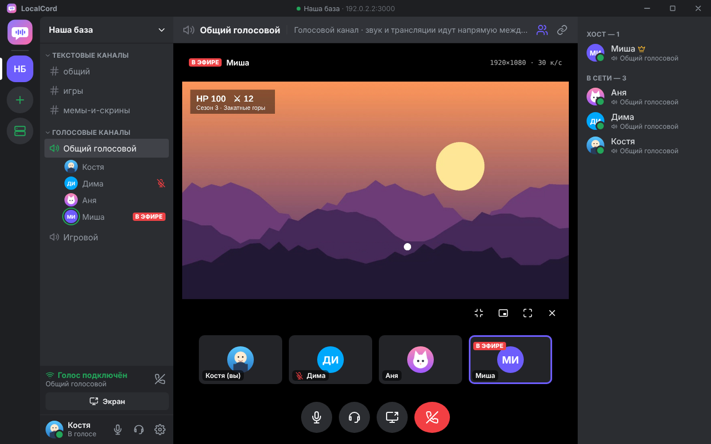
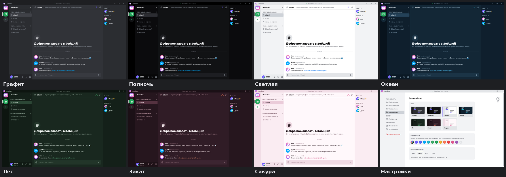
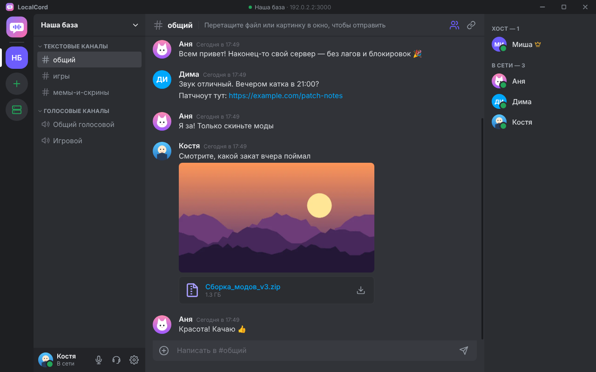
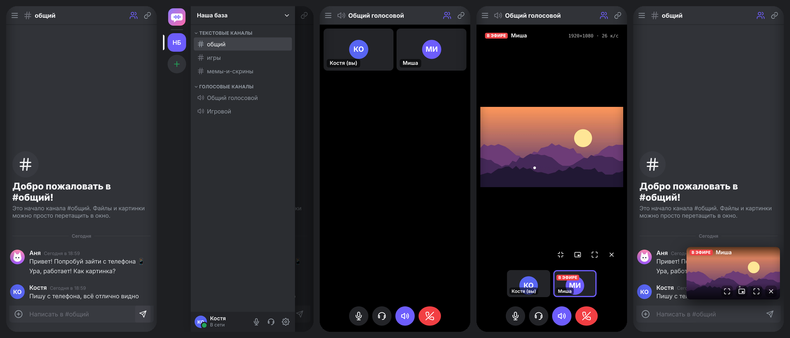
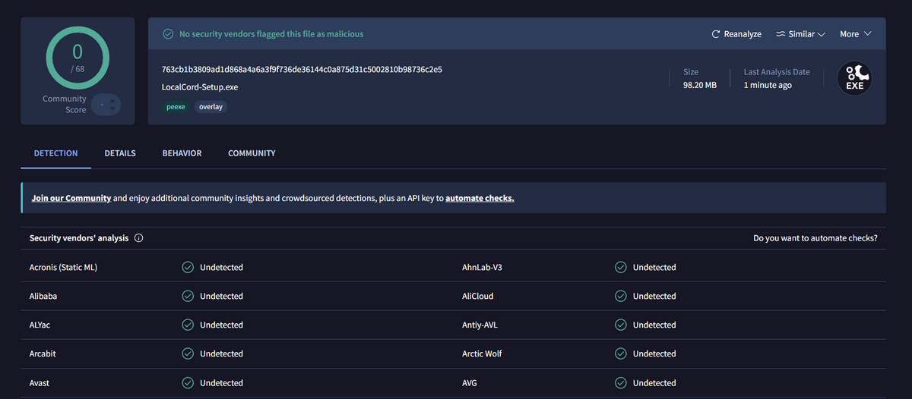

Voice, chat, files and screen sharing up to 4K. The server is one of your friends’ computers, not someone else’s data center: it works on a local network and over Radmin VPN, with no accounts and nothing to block.

Everyone installs the same app. It takes a few seconds and needs no administrator rights. On first launch — your name and a photo.
One of the friends clicks “Create a server”. The server runs right inside the app while it is open or minimized to the tray.
The server shows up by itself under “Found on the network”. If it doesn’t, paste the address the host will show.



The installer is not signed with a paid certificate, so SmartScreen does not know it yet. Click “More info” → “Run anyway”.
Some antivirus products are wary of any new program without a paid digital signature and report something like “Suspicious program”. That is not a detected virus — it only means “I have not seen this file before”.
The installer was checked on VirusTotal — 68 antivirus engines at once. Version 2.1.2: 0 of 68, no threats found (report):

The source code is open on GitHub, and the installers are built automatically straight from it.
Sometimes an antivirus keeps blocking the file even after it is restored from quarantine — in that case add LocalCord to the exclusions:
Look for “Exclusions” or “Trusted applications” in your antivirus settings. Download LocalCord only from this page or from GitHub.
Everyone, including the host, has to be in the same virtual network — for example Radmin VPN. The host should click “Allow” once in the “Invite friends” window so that Windows Firewall lets friends in.
Radmin VPN exists only for Windows. At home, on the same Wi-Fi as the host, the phone finds the server by itself. Away from home you need a VPN network that has an Android app (for example ZeroTier or Tailscale) and that the host’s computer is also part of — it can be in Radmin and in such a network at the same time.
Download the file to your phone and open it. Android will ask you to allow installing from the browser or file manager — allow it once. New versions install over the old one; your profile is kept.
Settings → Updates: “Check for updates” shows the latest version, “Download and install” puts it over the current one — your profile, settings and history are kept. The same page lists earlier versions with a “Go back” button. Once a day the app checks for a new version by itself (this can be turned off). On Android the button opens the APK download.
Only on the host’s computer. Voice and video go directly between participants and are always encrypted.